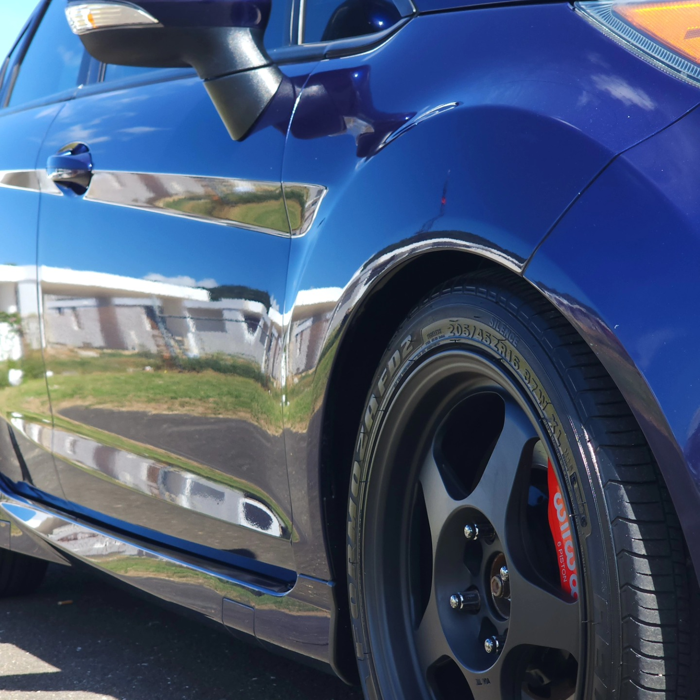
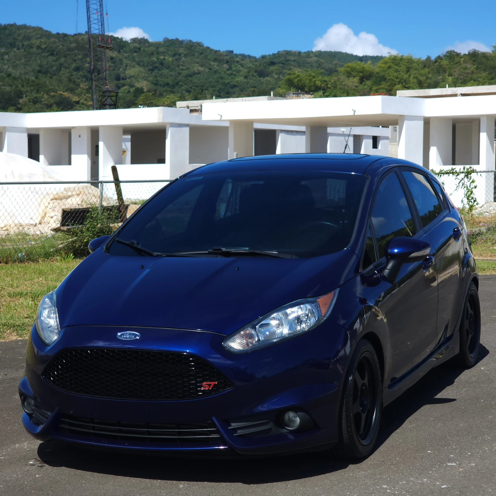
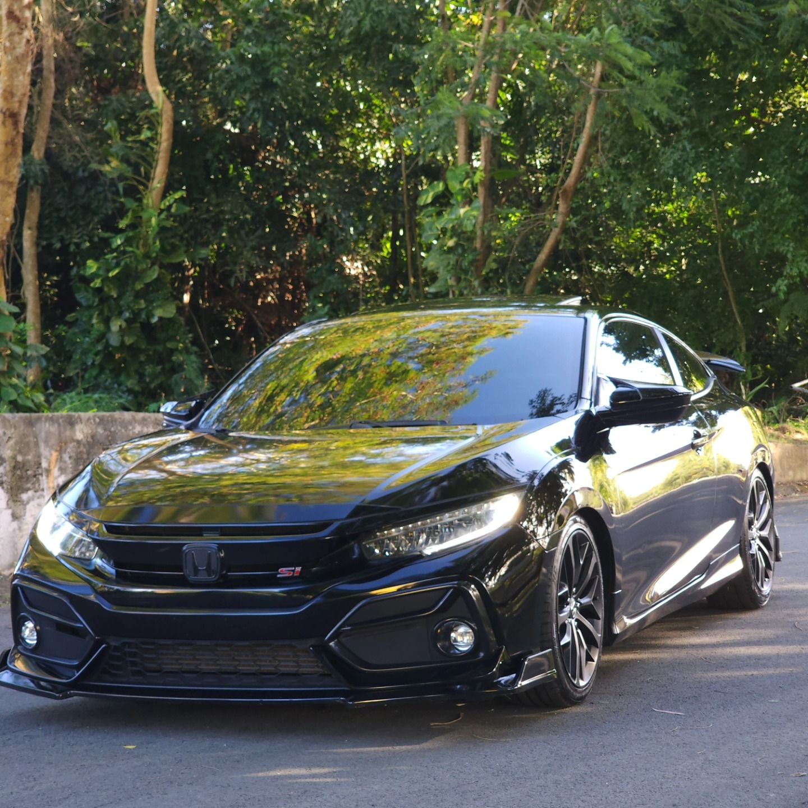
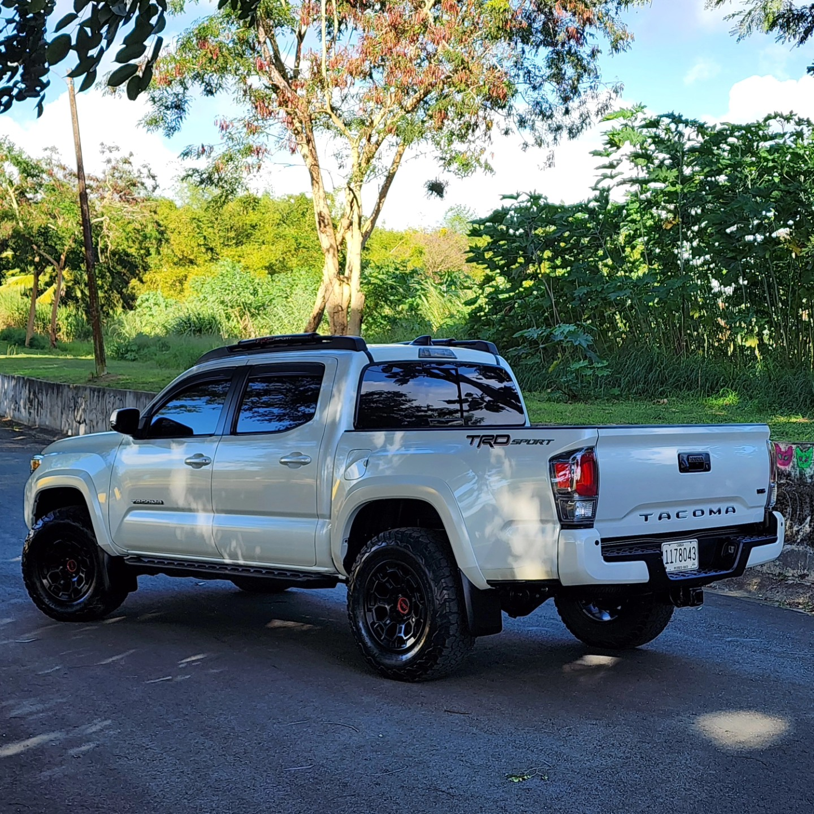
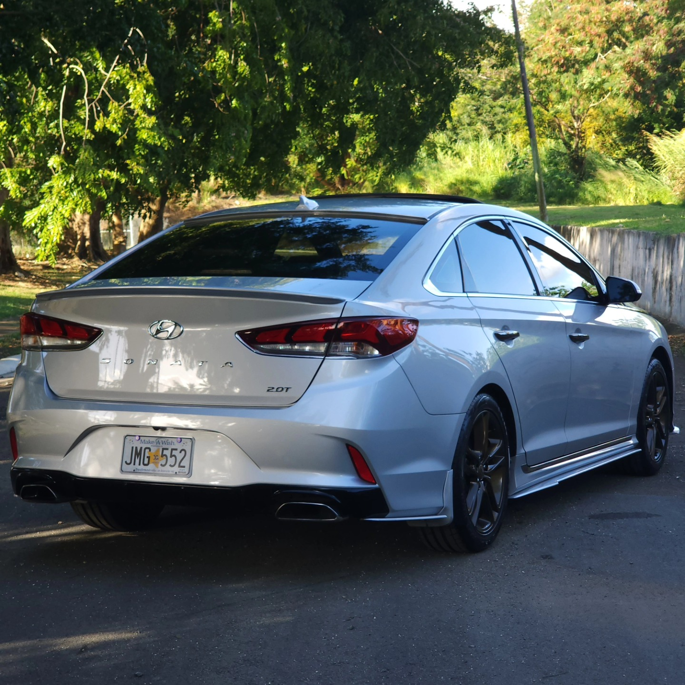
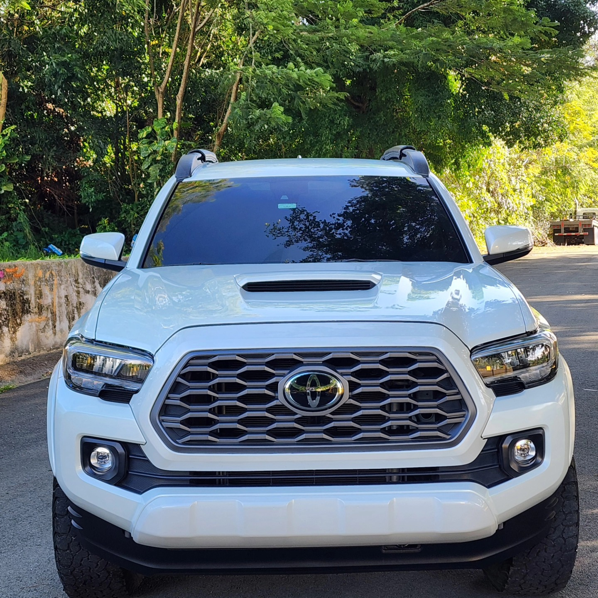
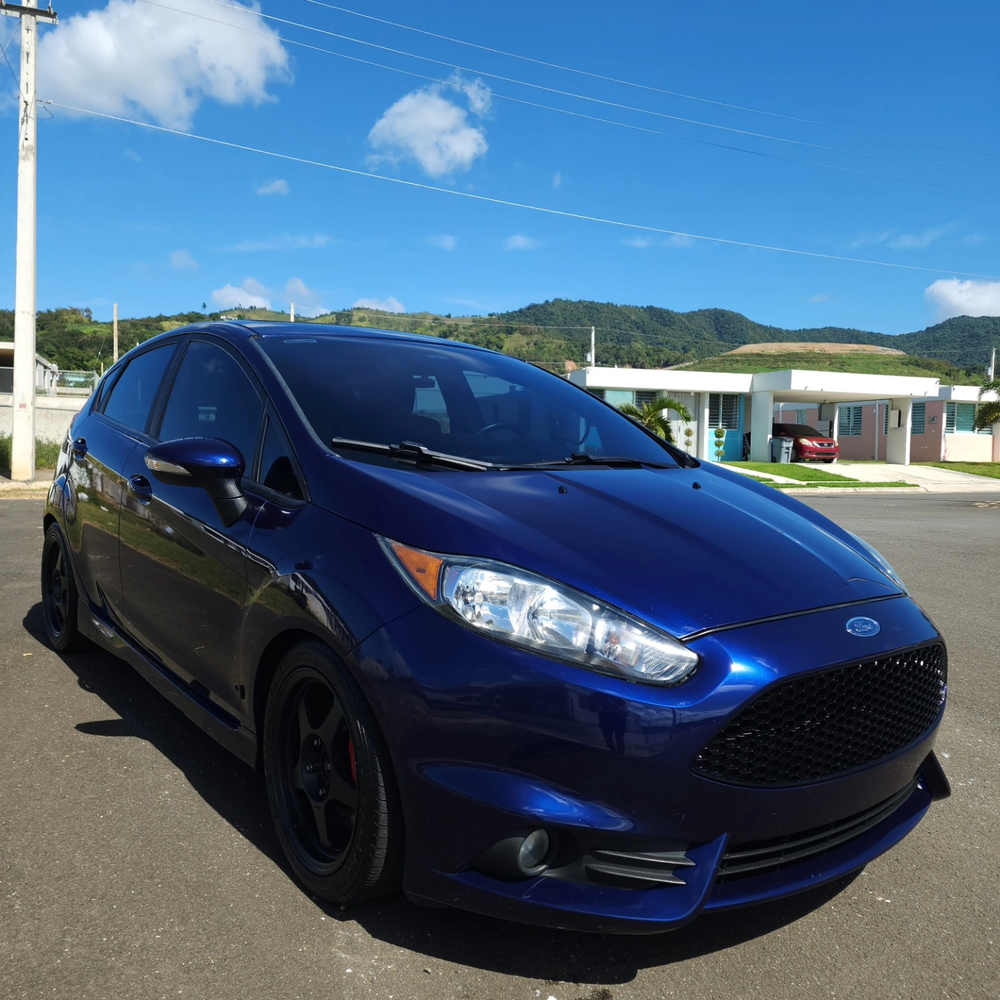

Detailing estético completo
Cuidado estético integral del vehículo, con atención a cada superficie y cada detalle visible.

Perfeccionamos el estado natural de su vehículo, detalle a detalle, en Juncos.
Fotos reales de vehículos trabajados por G&C Detailing. Toca una foto para ampliarla.






El enfoque es uno solo: que su vehículo luzca en su mejor estado natural.
Cuidado estético integral del vehículo, con atención a cada superficie y cada detalle visible.
Lavado detallado y realce del brillo de la pintura, para que el vehículo recupere su presencia.
Limpieza detallada del interior, para que por dentro se sienta tan bien como se ve por fuera.
Por WhatsApp al 787-909-3812 con tu vehículo y lo que buscas.
Cuadramos día y hora para recibir tu vehículo en Juncos.
Trabajamos tu vehículo con máximo cuidado estético.
Lo ves terminado y sales con su estado natural perfeccionado.
En D17 Calle Conuco, Juncos, Puerto Rico.
Por WhatsApp al 787-909-3812: dinos tu vehículo y coordinamos día y hora.
Es el cuidado detallado del vehículo para perfeccionar su estado natural: limpieza a fondo, realce del brillo y atención a cada detalle.
Depende del vehículo y su condición. Al reservar por WhatsApp te confirmamos el tiempo estimado.
Sí. Escríbenos con el modelo de tu vehículo y te confirmamos el servicio.
Cuéntanos tu vehículo y coordinamos tu detailing en Juncos.
DirecciónD17 Calle Conuco, Juncos
Esta página la creó ManuPro. Escríbenos hoy mismo y cotiza la website profesional de tu negocio.
Cotizar por WhatsApp